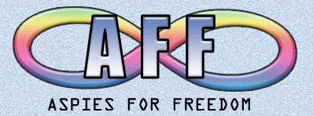

Como surgiu o Dia do Orgulho Autista?

O Dia do Orgulho Autista foi criado em 2005 pelo grupo britânico Aspies For Freedom, uma organização formada por pessoas autistas.
Inspirado por movimentos de orgulho de outras minorias, o objetivo da iniciativa foi promover uma visão mais positiva do autismo, reconhecendo-o como parte da diversidade humana e não como algo a ser corrigido.
Desde então, a data vem sendo celebrada por comunidades em diferentes países, incluindo o Brasil, onde tem ganhado cada vez mais visibilidade e relevância.
Linha do tempo
- 2005: Primeira celebração do Orgulho Autista pela organização Aspies For Freedom.
- 2010: Expansão de movimentos autistas na América Latina.
- 2020: Crescimento do ativismo digital, com maior presença de pessoas autistas nas redes sociais.